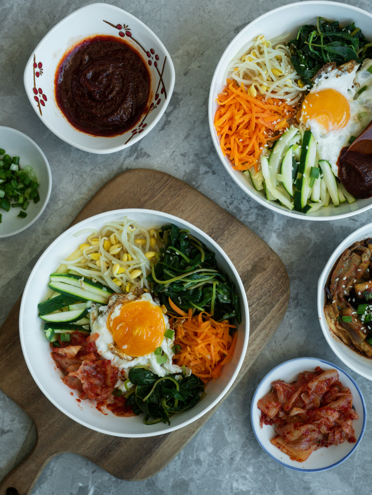

Must-Try Korean Foods
Korean cuisine offers a delightful mix of flavors, textures, and colors. Here are some iconic dishes you shouldn't miss:

Korean BBQ
Grilled meats (usually beef) cooked at your table, served with lettuce wraps and various side dishes.

Bibimbap
Mixed rice bowl with vegetables, meat, egg, and gochujang (chili paste).

Kimchi
Fermented vegetables (usually napa cabbage) with chili and seasonings - Korea's national dish.

Tteokbokki
Chewy rice cakes in sweet and spicy sauce, often with fish cakes and boiled eggs.

Korean Fried Chicken
Double-fried chicken with a crispy exterior and juicy interior, often glazed with sweet and spicy sauce.
Hotteok
Sweet pancakes filled with brown sugar, cinnamon, and nuts, popular as a street food snack.